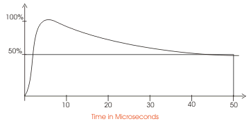

An electrical surge can be occurred in an electrical power transmission system due to various reasons. Surge in electrical system originated mainly due to lightning impulses and switching impulses. Electrical surge produces a large transient over voltage in the electrical network and system. The shape of the transient over voltage has a steeply rising front with slowly decaying tail as shown in the figure below. This steep voltage wave travels through the electrical network and causes over voltage stresses on all the electrical insulators and equipment come under its travelling path.

That is why all electrical equipment and insulators of power system must be protected against electrical surges. The method of protecting system from surge is normally referred as surge protection. The main equipment commonly used for this purpose is lightning arrester or surge arrester.
There are two types of surges one comes externally from atmosphere such as atmospheric lightning. Second type is originated from electrical system itself, such as switching surges.
When an electrically charged cloud comes nearby an electrical transmission line, the cloud induces electrical charges in the line. When the charged cloud is suddenly discharged, through lightning, the induced charged in the transmission line is no longer confined static. It starts travelling and originate dynamic transient over voltage. This transient over voltage travels towards both load and source side, on the transmission line because of distributed line inductance and stray capacitance. This surge voltage travels with speed of light. At the end of the transmission line, as the surge impedance changes, the surge voltage wave reflected back. This forward and backward travelling of surge voltage wave continues until the energy of the surge or impulse is attenuated by line resistance. This phenomenon causes voltage stress on the transmission system many times greater than normal rated voltage of the system. Hence, surge protection scheme must be provided to the electrical power transmission system to make reliable and healthy system. Lightning arrester is one of the main components to to protect the system from surge.
As we said earlier, that the electrical surge also can be generated from the system itself. Actually during switching operation there may be a chance of electric current chopping. If during normal operation, if electrical isolator is opened on load. Sudden open circuit is occurred in the system.
In addition to these, the basic arc-quenching techniques of SF6 circuit breaker and vacuum circuit breaker may give rise to electric current chopping and multiple re-ignition sometimes.
As we know that sudden electric current chopping give rise to the di/dt. [di/dt = rate of change of electric current with respect to time]. As the electrical load is generally inductive, there is a transient voltage, expressed by L(di/dt) where L is the inductance of load of system. This voltage is induced across the opening contacts, and travels towards load and reflects in similar manner of lightning impulse. lightning arrestor or surge arrester are provided at the end of the transmission line to withstand the surge voltage.
Generally oil field electrical power transformer, electrical switchgear, cables, electrical transmission lines, distribution lines are quite capable for withstanding these switching impulse voltages, as their insulation level is quite high to withstand these over voltages. But, generator, electric motor, dry type transformers and electric arc furnaces etc. can not withstand large switching impulse voltages. As essentially this types of equipment do not have very high level of insulation. To protect these equipment from surges, lightning arrester is must.
In electrical sub-station, arresters are mainly used at the entrance of any feeders and also they are used at both rides of electrical power transformers as transformer is also considered as inductive load and very costly equipment.
In modern era, gap less ZnO or zinc oxide surge arresters are mainly used for surge protection. Let us discuss zinc oxide type gap less arresters.
Construction of Zinc Oxide Lightning Arrester
This type of arrester comprises of numbers of solid zinc oxide disc. This discs are arranged one by one to form a cylindrical stack. The number of zinc oxide discs used per lightning arrester depends upon the voltage rating of the system. This stack is kept inside a cylindrical housing of polymer or porcelain. Then the stack is placed inside the housing and highly pressed by heavy spring load attached to end cap at top. The equipment connection terminal for line is projected from top cap and connection terminal for earth is projected from the bottom cap.
Working Principle of Zinc Oxide Lightning Arrester
The normal operation is defined as condition when no surge is presented and the surge arrester is subjected to normal system voltage only.
The zinc oxide has highly non-uniform electric current voltage (I – V) characteristics. This typical I-V characteristic makes zinc oxide very suitable for designing gap less zinc oxide lightning arrester for surge protection. The non linear resistance of the block is an inherent bulk property and consists of mainly zinc oxide (90 to 95%) with relatively small amounts of several additives of other metal oxide (5 to 10%) like alumina, antimony tri-oxide, bismuth oxide, cobalt oxide, zirconium etc. On a macroscopic scale the additives are almost homogeneously distributed throughout the arrester blocks. But the micro structures of the metal oxide block represents a network of series and parallel arrangements of highly doped zinc oxide (ZnO) grains separated by inter granular junctions. The non linear behavior is the super imposition of non linear characteristics of individual junctions. The electric current carrying capacity of the surge arrester block is proportional to the total cross-section of the block.
The non linear resistance characteristics of ZnO block can be expressed as,
where, Ir and Vr are the reference electric current and voltage respectively of the lightning arrester or surge arrester block. The value of x is 30 to 40 in case of metal oxide block. For normal system, the voltage and electric current increase. For normal system, the voltage and electric current increases linearly, i.e. for increasing system voltage at this range, electric current is increased in linear proportionate. The electric current at this region of characteristics is in range of micro ampere. But beyond a certain voltage level, leakage electric current voltage level, leakage electric current starts increasing very rapidly it is of KA range. The voltage beyond which the electric current through the LA becomes such high, is referred as reference voltage and the electric current at reference voltage is known as reference current. Sudden draining of huge electric current through lightning arrester just beyond reference voltage level, prevents the system from transient over voltage stress. The voltage-current relation in a metal oxide block highly depends upon temperature. Metal oxide block has negative temperature co-efficient. That means with increase in temperature, resistance of the surge arrester decreases hence for some system voltage, the leakage electric current through the instrument increases with increase in temperature.
As we know that, there would be a continuous leakage electric current through the LA. This leakage electric current generates heat. This generated heat should be dissipated properly otherwise the temperature of the LA may rise which further increases the leakage current. Because of this the proper thermal design of surge arrester housing plays an important role. There is a critical temperature depending upon the voltage rating of the metal oxide block beyond which joule heat generated in the block which joule heat generated in the block can not be dissipated at required rate and which finally leads to thermal runaway of lightning arrester.
Now we can understand that, the working principle of LA or surge arrester used for surge protection fully depends upon non linear V-I characteristics of metal oxide (ZnO) blocks inside the insulator housing of the arrester.
 by
by